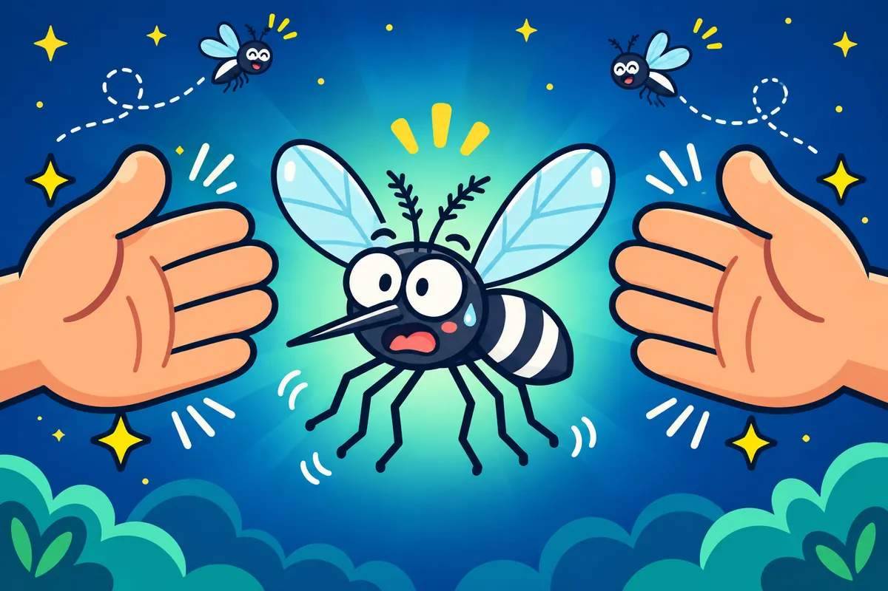
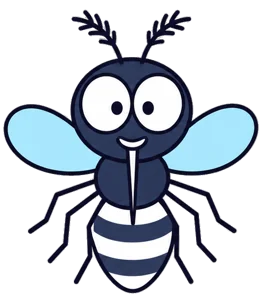

60초
👆 터치0점
양손이 모두 보이면 시작해요
왼손
오른손

1
양손을 화면에
보이게 서요
양손을 화면에
보이게 서요
2
모기가 주황색이
되면 기회!
모기가 주황색이
되면 기회!
3
손 사이에 두고
짝! 박수
손 사이에 두고
짝! 박수
일반 모기 1점
⚡ 번개 모기 3점 · 빠르고 금방 도망감
🔥 피버 5연속부터 +1점
앵~ 박수로 모기를 잡아라!
🌐 켜 두면 별명·점수·잡은 수·날짜가 30일 동안 온라인 기록판에 올라가 누구나 볼 수 있어요. 실명·학번은 쓰지 마세요.
📒 이 컴퓨터의 기록 최근 순 · 이 컴퓨터에만 저장
본명 대신 별명을 쓰세요. 카메라 영상은 이 기기 안에서만 처리되고 저장·전송되지 않습니다.
준비 중
카메라 권한을 요청하는 중입니다.
손 인식에 필요한 파일 약 19MB를 처음 한 번만 받습니다. 다음부터는 바로 시작됩니다.
⏸ 잠깐 멈춤
시간과 모기가 멈춰 있습니다. 계속하면 3초 뒤에 다시 시작합니다.
60초 끝!

0점
👆 터치로 한 기록
0번박수
0%명중률
0연속최대 연속
📒 이 컴퓨터의 기록 최근 순 · 이 컴퓨터에만 저장
‘다음 사람’은 별명 입력으로 돌아갑니다.